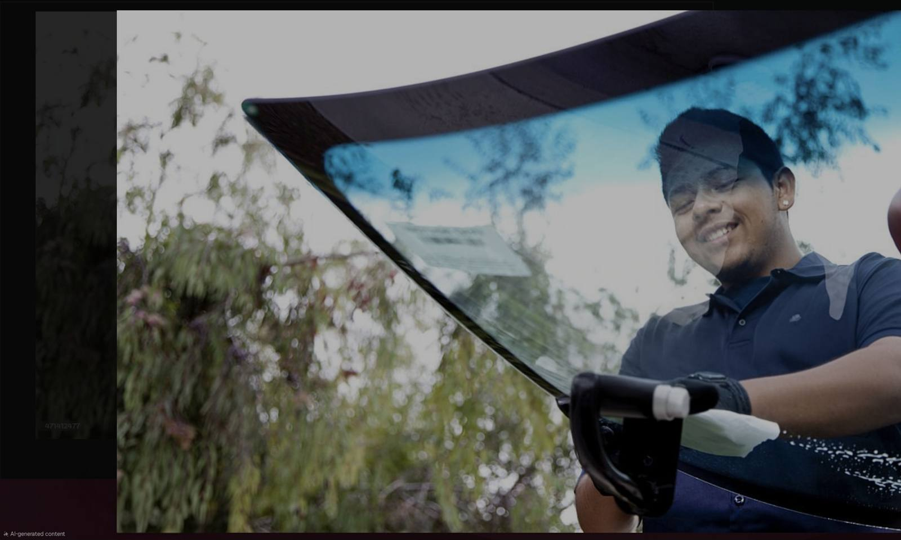

If your vehicle has lane keeping, automatic emergency braking, or adaptive cruise, the camera behind the windshield has to be re-aimed after the glass comes out. A tiny error at the lens becomes a big error down the road. We cover all of Pasco and the surrounding Franklin County area.
Free quote, we reply as soon as we can.
Get My Free Quote OnlineFill out a short form and we call you back. Prefer to talk now? Call (509) 581-2623.
We bring ADAS windshield recalibration to you anywhere in Pasco — your driveway, your workplace parking lot, or your yard. There is no shop to drive to. We serve all of Pasco.
That means two things for local drivers. First, chip repair pays for itself here more than anywhere — catching a bullseye the week you get it is the difference between a short visit and a full windshield. Second, we do a lot of heavy truck and fleet work in Pasco yards, so scheduling a work truck around a shift is routine rather than a special request.
US 12, US 395 and I-182 put you beside trucks every day. Lane keeping matters most when a big rig is in the next lane. If the windshield camera was not recalibrated after a replacement, the car can steer wrong at the worst time.
A proper recalibration includes a scan before and after, and a report showing each system is ready. Ask for a copy and keep it. If you ever have a collision claim, documentation that the safety systems were calibrated to spec after the glass work matters.
Ask whether recalibration is included in your quote when a windshield on an ADAS-equipped vehicle is replaced. If your glass was replaced elsewhere and never recalibrated, call and ask about it.
Advanced driver assistance systems read the road through a camera mounted to the windshield, sometimes paired with radar behind the grille. The camera is aimed to the manufacturer's specification at the factory, referenced to the exact position of the glass it is bonded to.
Replace the glass and that reference moves. Even a perfect installation shifts the camera slightly, and a small angular error at the lens becomes a large positioning error at 100 metres. Left uncalibrated, lane keeping can drift, automatic braking can read distance wrong, and the dash may or may not warn you about it. Most manufacturers require recalibration after any windshield replacement.
Full detail on this service, including pricing factors and warranty, is on our ADAS windshield recalibration page.
Mobile ADAS recalibration throughout Pasco, including Road 68, Broadmoor, Court Street, Riverview, Sandifur Parkway, and the rest of the 99301, 99302 area. Not sure whether you are in range? Call and we will tell you straight.
Describe the damage and your vehicle. We will price it on the call — no inspection appointment needed first.
☎ (509) 581-2623
Call for a free quote. We'll tell you exactly what it costs and how fast we can get to you. Ask any question you want before you decide.
☎ Call Now — (509) 581-2623